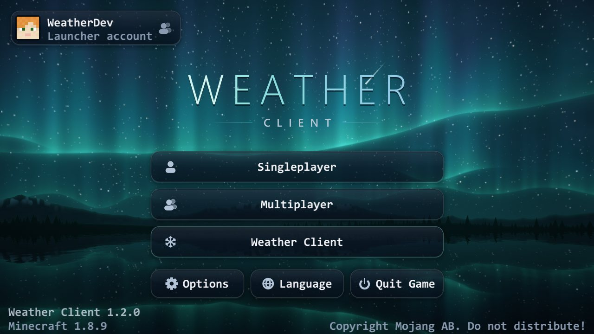
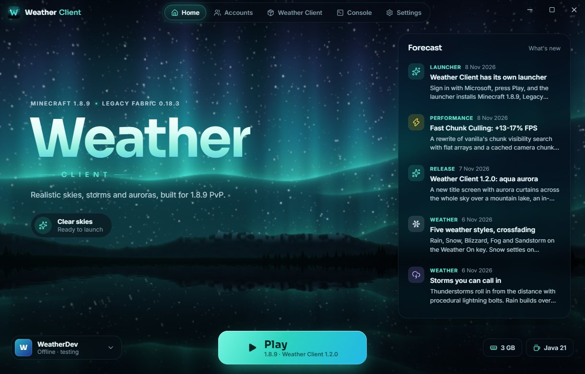

Aurora Sky
Northern lights across the whole night sky, curtains rippling over the stars, and they stay up even during storms.
Minecraft 1.8.9Legacy Fabric
Rain, snow, storms and aurora across the whole sky, a clean HUD for PvP, and a launcher that sets it all up in one click.

The in-game title screen. The aurora is live, not a picture.
Weather
Press the Weather key and the sky changes. Rain leaves the ground wet and reflective and drips down walls. Snow settles on everything open to the sky. Thunderstorms roll in from the distance with procedural lightning, and every part of the weather has its own slider, from a light shower to a full storm.
It all happens on your screen only, so it works on any server and never changes the game for anyone else.
Northern lights across the whole night sky, curtains rippling over the stars, and they stay up even during storms.
Designed day and night skies with no black void below the horizon. Pack Skies shows resource-pack skies without OptiFine.
A see-through surface with sky reflections and glitter, and clear water when you're under it.
Bloom, colour grading and vignette for a shader look, without installing a shader pack.
PvP
Built for 1.8.9 PvP. Every module is a switch with its own settings, and you drag HUD elements wherever you want them. There are 72 modules in all.
Performance
Fast Chunk Culling rewrites how the game works out which chunks you can see, using flat arrays and a cached camera chunk. It draws exactly the chunks vanilla would, with a fraction of the work each frame.
Measured against vanilla on the same scene. The launcher also runs Java 21 with the Z garbage collector by default, so memory clean-up pauses stay too short to notice.
Launcher

Screenshots
FAQ
Yes. The launcher and the mod are free.
Yes. You sign in with the Microsoft account that owns Minecraft: Java Edition. The launcher downloads the game from Mojang's own servers.
No. The launcher keeps its own game folder (%APPDATA%\.weatherclient). It only reads your .minecraft folder, to copy files you already have instead of downloading them again, and it can import your options, servers and resource packs once if you ask it to.
Weather Client is tested on Java 21. The launcher finds the Java you have installed and picks the best one; if there's no Java 21, it offers to download Eclipse Temurin 21 into its own folder.
It's a client-side mod, so it works anywhere 1.8.9 does. Weather and sky effects only change what you see. As with any client mod, follow each server's rules on allowed modifications.
The installer isn't code-signed yet, so Microsoft Defender SmartScreen may warn about it. Check the SHA-256 below matches your download, then choose More info and Run anyway.
The launcher's Console tab shows the game's output live, and when the game crashes it offers to open the crash report. Settings, then Advanced, has buttons for the logs, crash reports and screenshots folders.
The launcher installs Minecraft 1.8.9, Legacy Fabric and Weather Client, then keeps the mod up to date.
Download for WindowsThe download link isn't set yet. Put the installer's address in config.js.
Your download has started. If Windows SmartScreen stops the installer, choose More info, then Run anyway.
f00b119b0f846fe1ae959349d5a305b27a1f40ef5d3afb71cac7ba59b5239c56